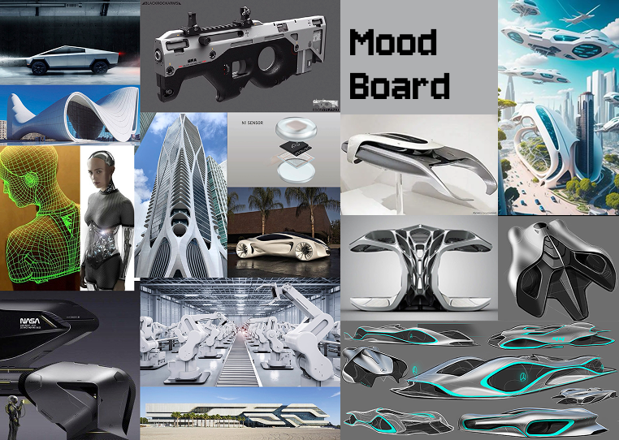
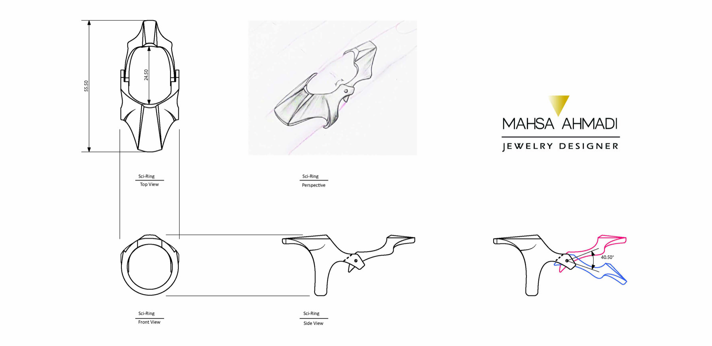
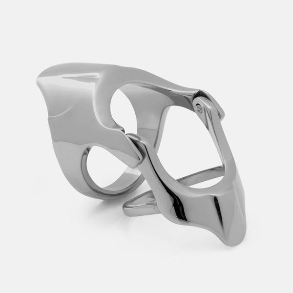
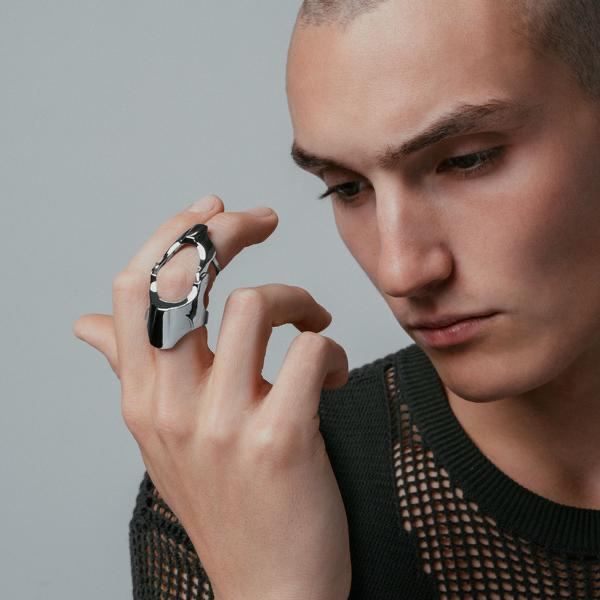
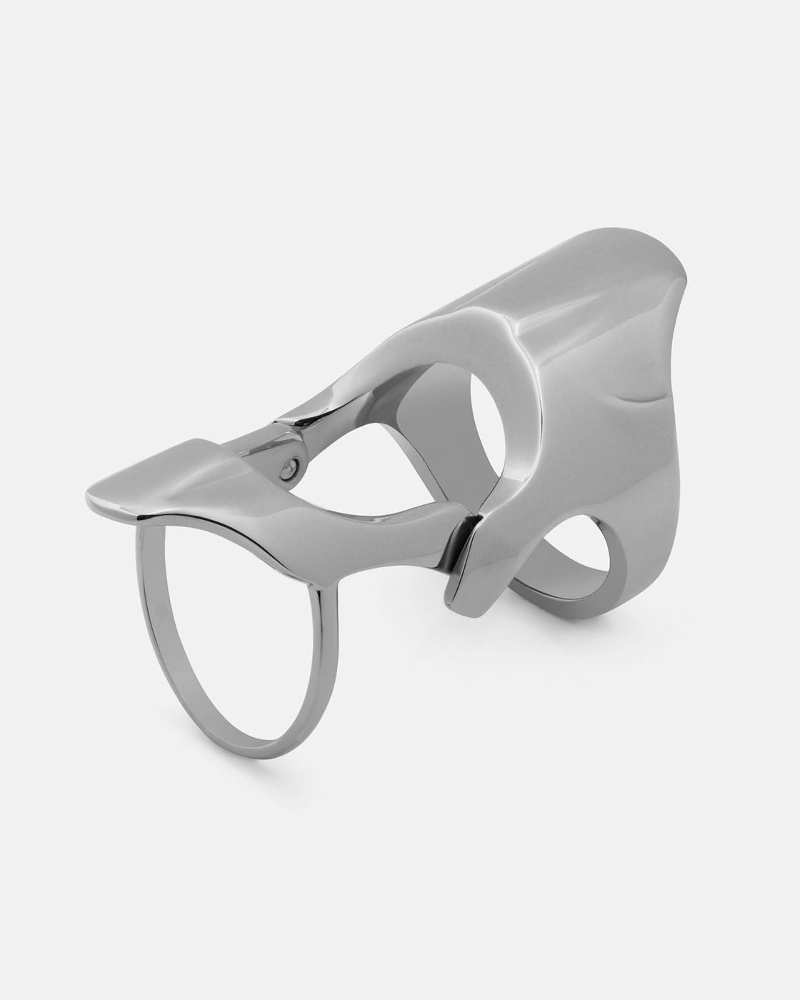
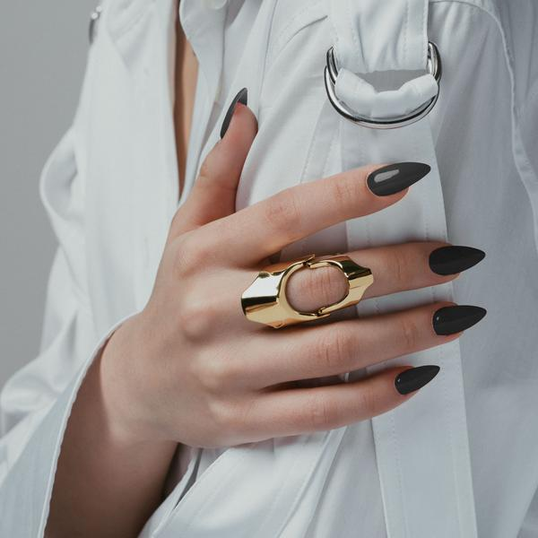

01
Proxy
Designed for Vitaly, Proxy draws on bionic movement and structural innovation. Its articulated form suggests flexibility while remaining precise and wearable.
Designed for Vitaly
Proxy
Mood board

Proxy
Design development
Sketch
Proxy
Silver variation · Product view

Proxy
Finished stainless-steel ring

Proxy
Articulated detail

Proxy
Gold variation · Worn view